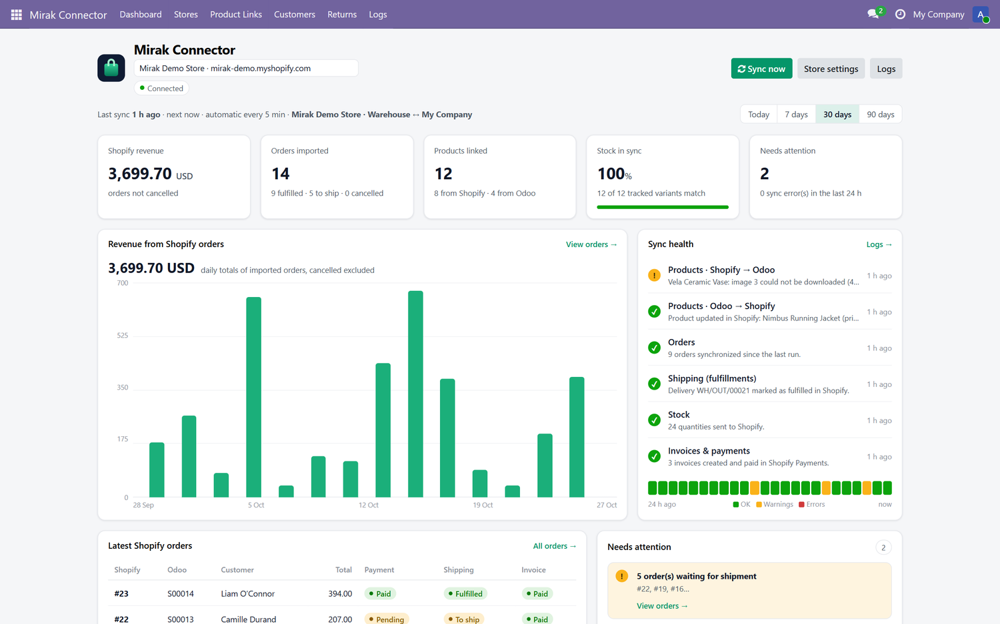
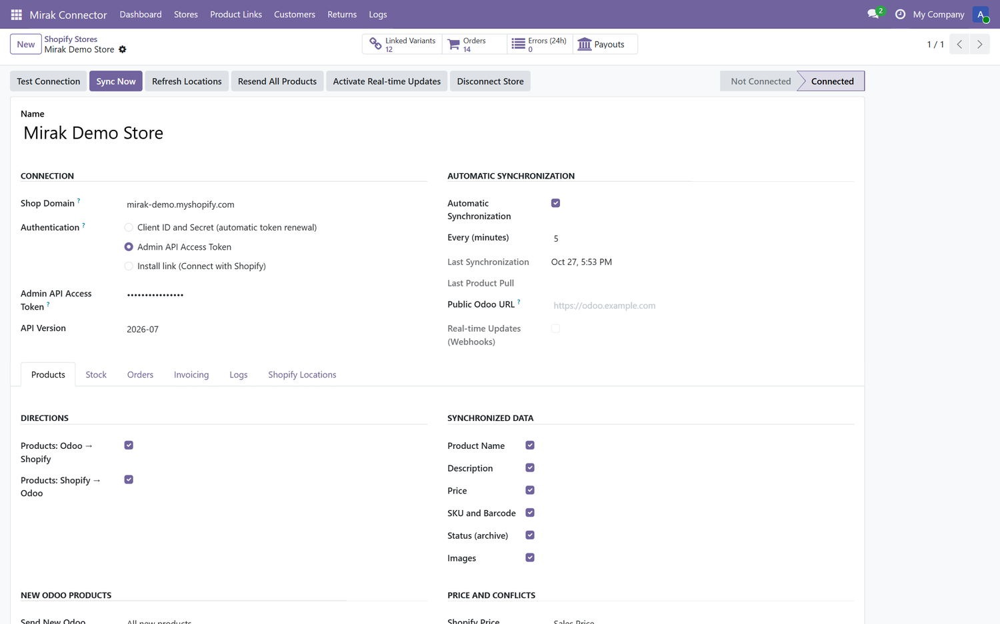
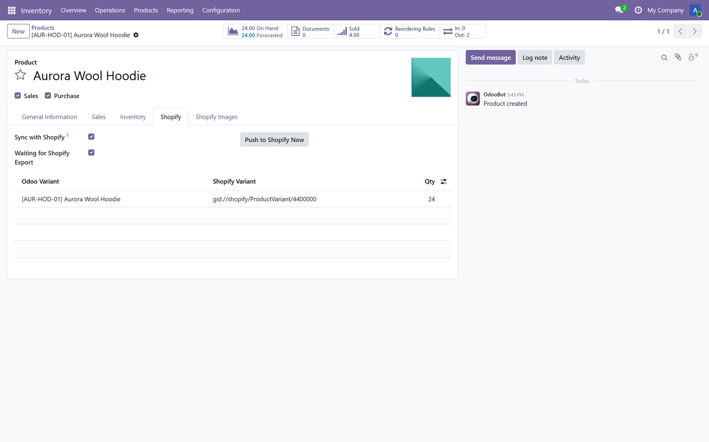
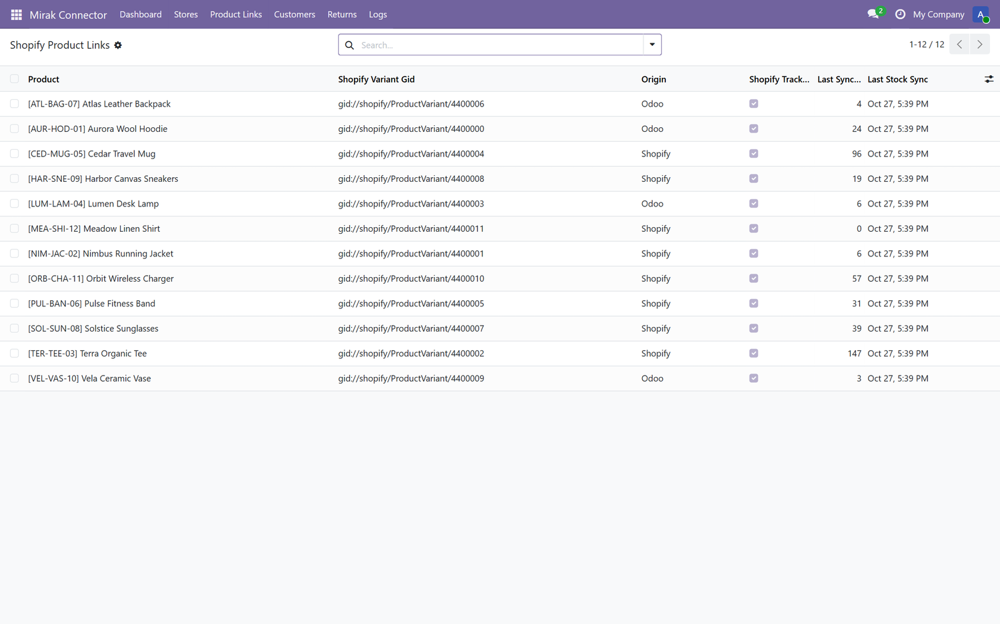
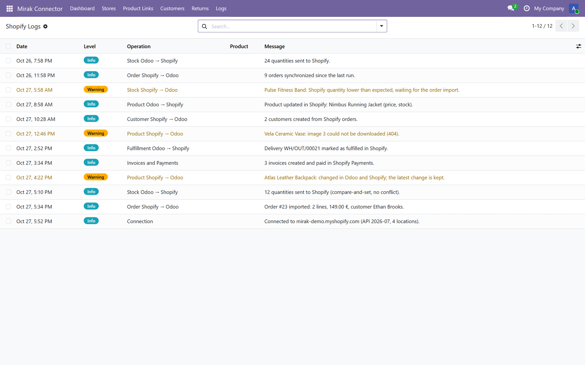

Odoo 17.0 · Community & Enterprise
Mirak Connector for Shopify
Two-way synchronization between Odoo 17.0 and Shopify
Products, variants, images, tags, collections, multi-location stock, orders, customers,
invoices, payments, refunds, returns, payouts and deliveries — kept in line automatically,
for one or several Shopify stores.
Free trial — no credit card, no key
Install this version and use every feature for 30 days, with up to
25 linked products and 1 Shopify store. Nothing to configure: the trial starts
when the module is installed. When you are ready, move to the full version — your
configuration and your links are kept.
2-way
Products, stock and orders
100%
Webhooks in real time
1
Shopify store in the trial
0
Duplicates on first sync
Both directions, under your control
Create or edit a product, a stock level or an order on either side: the other side follows. Every direction has its own switch, so the connector adapts to the way you work.
Stock that never oversells
Quantities are sent with Shopify's compare-and-set: a sale made in Shopify a second earlier is never overwritten. Several locations, a safety buffer and a percentage of the published stock are supported.
Accounting that closes itself
Shopify orders become confirmed sales orders, then invoices, payments in the right journal and credit notes for refunds. Shopify Payments payouts are imported with their fees and reconciled.
Everything at a glance
Revenue, orders, stock health, synchronization steps, 24 h activity and alerts in a single dashboard.

Products and variants
- New and updated products sent from Odoo to Shopify, and from Shopify to Odoo.
- Variants with up to 3 options (Shopify's limit), variant prices as price extras.
- Choose what is synchronized: name, description, price, SKU and barcode, status.
- Price from the sales price or from a pricelist, converted when the store uses another currency.
- Compare-at (crossed-out) prices and Shopify Markets prices from your Odoo pricelists.
- Tags in both directions (Shopify tags are never lost), Odoo category ↔ product type, category collections.
- Metafields mapped to Odoo product fields, translated names and descriptions.
- Which new products go to Shopify: all, selected categories, or only the ticked ones.
- Existing catalogues matched by SKU: no duplicates on the first synchronization.
Images
- Full image gallery in both directions, in the same order, the first image being the main one.
- Images added, removed or reordered on one side are applied on the other.
- Variant images and images shared by several products are handled.
- Existing catalogues are caught up progressively in the background.
Stock
- Several Shopify locations, each kept in line with its Odoo warehouse, in both directions.
- One Shopify location can publish the stock of several warehouses.
- Free quantity (on hand minus reserved) or on-hand quantity.
- Safety buffer and percentage of the stock published.
- Orders in transit are taken into account: no double counting, no overselling.
Orders and customers
- Shopify orders imported as confirmed sales orders, from the date you choose.
- All orders (cash on delivery included) or paid orders only.
- Customers matched by email or phone; delivery addresses, shipping and discounts kept.
- Taxes charged by Shopify matched to your Odoo taxes (included in the price or not).
- Orders in another currency get their own pricelist automatically.
- Orders edited in Shopify (items added, removed, quantities) updated in Odoo.
- Shopify POS orders imported with their shop location, already delivered.
- Cancellations in both directions, with restock, refund and notification options.
- Customers in both directions; abandoned checkouts become CRM opportunities.
Invoices, payments and refunds
- Invoices created when the order is imported, paid or delivered.
- Shopify payments registered in the journal of each payment method (card, cash, bank...).
- Shopify refunds become credit notes with the refund payment.
- Returns in both directions, restocked quantities never counted twice.
- Shopify Payments payouts: bank deposit, fees and reconciliation of the order payments.
- Optional sales, shipping and refund accounts; optional invoice emails.
Deliveries
- Deliveries validated in Odoo are marked as fulfilled in Shopify, with or without customer notification.
- Or the opposite: orders fulfilled in Shopify validate the Odoo deliveries.
- Tracking numbers and carriers are sent back to Shopify.
One store, fully featured
- The trial manages one Shopify store, with its own warehouse, settings and catalogue rules.
- Upgrading to the full version adds as many Shopify stores as you need.
- Per-store statistics, logs and error counters.
Control and transparency
- Real-time updates with Shopify webhooks (signed and verified), plus a regular synchronization as a safety net.
- Connect with an install link (OAuth) or with the app's Client ID and Secret.
- Automatic synchronization every few minutes, or on demand in the background.
- Conflict policy when a product changed on both sides: latest change, Odoo or Shopify wins.
- Detailed logs of every change, with automatic clean-up.
- Access token renewed automatically (Shopify Dev Dashboard apps).
Simple configuration
One form per store, every option in plain words, with a built-in connection test.

Shopify on every product
Link status, Shopify product ID and a “send now” button directly on the product form.

Every product link in one place
The Odoo product, its Shopify product and variant, the last synchronized quantity and the origin of the link.

Nothing happens behind your back
A readable log of every product, order, stock, invoice and delivery event.

Setup in 4 steps
- In the Shopify Dev Dashboard, create an app with the Admin API scopes listed in the
setup guide, release a version and install it on your store.
- In Odoo, open Mirak Connector > Stores and create a store with your
.myshopify.com domain and the app's Client ID and Client Secret.
- Click Test Connection, then choose the Shopify location and the Odoo warehouse.
- Pick your options and click Sync Now. Existing products are matched by SKU,
the others are created.
The complete setup guide, with the list of scopes and a troubleshooting section,
is included in the module (README.md).
Requirements
- Odoo 17.0, Community or Enterprise (Sales and Inventory).
- A Shopify store and an app created in the Shopify Dev Dashboard.
- Python package
cryptography
(already used by Odoo).
Good to know
- Up to 3 options and 100 variants per product, as in Shopify.
- Orders of up to 50 lines.
- Products tracked by lot or serial number are synchronized without their stock.
- Works with Odoo.sh, on-premise and Odoo Online.
Support included
Installation help, setup review and answers to any question about the synchronization
are included for one year. Use the Contact the author button of this page and
mention your Odoo version and your Shopify domain; you will get an answer within
one business day.
Author: Bouchibane Karim · License OPL-1 ·
Odoo 17.0
Shopify is a trademark of Shopify Inc.
This module is not affiliated with, nor endorsed by, Shopify Inc.